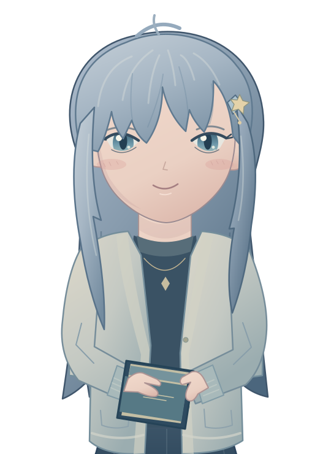
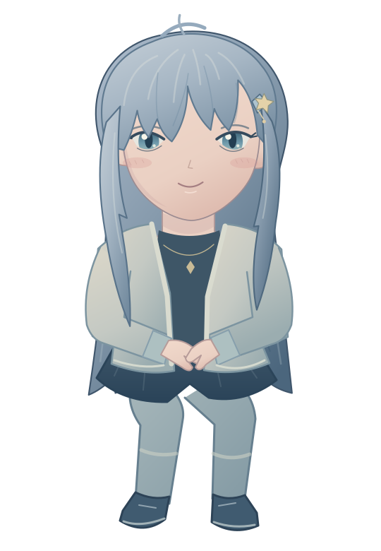

此刻，与你
凛 RIN
夜深了，这盏灯为你留着。

✧✦夜间书房·22:16
让世界慢一点，让陪伴近一点。
PLACES WE CALL OURS
让故事，换一个背景。
同一个人，不同的日常。今天想在哪里相见？
我们的房间 03 为日常留一盏灯
每一处风景，都可以成为新的开始。YOUR SPACE, YOUR STORY
A LITTLE CLOSER
让陪伴，留在桌面。
忙你的就好。她会在一个小小的角落，陪着你。
随手记拖动试试
LITTLE THINGS, BIG DAYS
给今天留一点空白。
不赶时间，不急着回答。
在灯亮着的时候，做一点喜欢的事。
结束今天的工作
读几页喜欢的书
TAKE YOUR TIME ✳

忙你的就好，偶尔看看我就够啦。